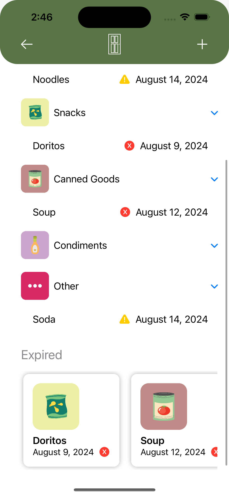
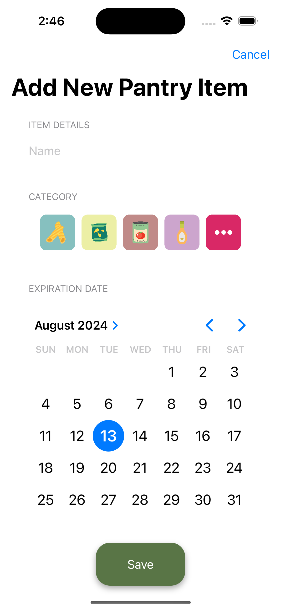

Michael Lane
Michael Lane
Michael Lane
Michael Lane
User items are categorized into two different sections: Pantry Items and Fridge Items. Ten random items from each section are displayed on the home screen in horizontal sliding lists. Each section also contains a navigation link taking the user to that specific view.
Inside of the Pantry and Fridge views, users are presented with three different sections: Expiring Soon, Categories, and Expired. Expired and soon to be expired items are displayed in horizontal scrolling lists. There is also a drop down menu for each category within the view, displaying the items of that category.
Users are able to add a new item within either the Pantry or Fridge view by clicking the plus button. This brings the user to a new view in which there presented with the following selection prompts: Name, Category, Expiration Date. Items can be added in bulk from the home screen.
